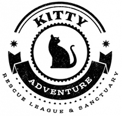
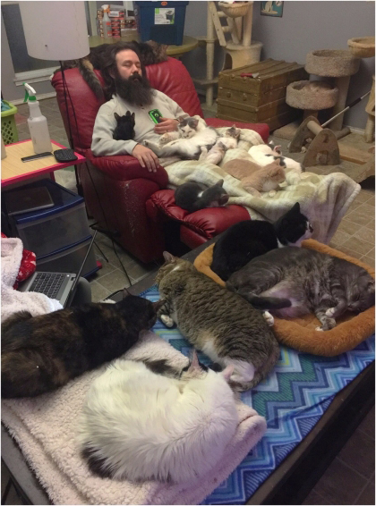

We are a feline retirement home located in the DFW are of North Texas. We provide life long love, vet care, and comfort for forgotten and abandoned cats throughout the United States. We do have a very large 4 legged family, that also includes a sprinkling of dogs and even a hamster! But the cats always come first in our lives.
We both work full time jobs while caring for everyone. In addition to seniors, we also take in younger special needs cats as our space and financial ability allow. Adoption isn't our main focus, as we aim to be the forever home of any cat that comes to live with us, but we do adopt out to the right families. And of course we adopt out the younger ones too!
While our work is very sad, we do lose a lot of family members in a relatively short time because of old age or chronic illness, our focus is on the positive aspects of having a senior pet. Yes, they can be expensive, attitudes and behaviors can change, bodies become frail and strat to betray them, but they are family and we promised them forever. A day, a month, a couple of years, forever. We made a promise to care for each and every cat and give them the very best in tasty food, medicine, and comfort.
Thank you for finding us - we can't do this alone! We are where we are today because of loyal followers like you!
